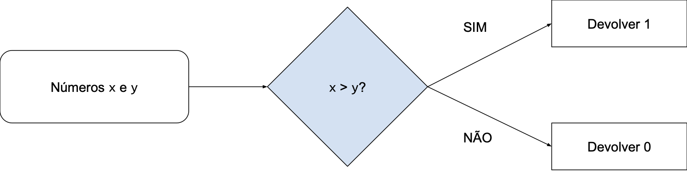

03 - Desvios Condicionais (if)¶
Nas aulas anteriores desenvolvemos programas que funcionam mais ou menos como uma linha de produção: uma série de comandos são executados um após o outro, sem opção de seguir por um caminho diferente. Você pode argumentar que o input(), visto na aula passada, permite que o programa se comporte de formas diferentes dependendo do que o usuário digitar no teclado. Mas se olharmos o programa em si, a sequência de operações executadas é sempre a mesma. Na aula de hoje veremos como desenvolver programas que, dada uma condição, executam, ou não, um determinado bloco de código.
Suponha que queremos desenvolver uma função que recebe dois números, x e y como argumento e devolve 1 se x for maior do que y e 0, caso contrário. A não ser que exista uma fórmula fechada (existe, para alguns casos), precisamos de alguma forma de executar um trecho de código somente se x for maior que y e outro trecho de código somente se essa condição não for verdadeira. Nossa função deve fazer algo parecido com o seguinte:

Para isso vamos precisar do operador if. Vamos começar com um exemplo curto para entender como ele funciona.
EXERCÍCIO 1¶
Teste o seguinte programa:
print('Começando o programa')
if True:
print('Entrou no primeiro if')
if False:
print('Entrou no segundo if')
print('Saindo do programa')
O que foi mostrado no terminal? A saída do terminal está de acordo com o que você esperava que acontecesse?
O operador if¶
O operador if funciona da seguinte maneira:
- No caso de
if True:o bloco doifé executado; - No caso de
if False:o bloco doifnão é executado.
Importante: o operador if sempre deve ser procedido por um valor True ou False. Mas então, para que serve o if? Ele parece bastante limitado... Para isso precisamos abrir mais um parênteses.
Operadores relacionais¶
EXERCÍCIO 2¶
Teste o programa a seguir:
# Testa as desigualdades.
menor = 1 < 2
print(menor)
print(1 < 2)
maior_ou_igual = 1 >= 2
print(maior_ou_igual)
print(1 >= 2)
# Isso sim é um igual e não uma atribuição.
igual = 1 == 2
print(igual)
print(1 == 2)
# Testa se é diferente.
diferente = 1 != 2
print(diferente)
print(1 != 2)
# Testa se contém.
contem_i = 'i' in 'Insper'
print(contem_i)
print('i' in 'Insper')
contem_I = 'I' in 'Insper'
print(contem_I)
print('I' in 'Insper')
EXERCÍCIO 3¶
Faça o exercício [TESTE DE MESA] Operadores relacionais.
Todas as expressões no código acima resultam em um valor booleano (True ou False). Vimos que o if só pode ser seguido de um valor booleano. Como as expressões acima resultam em um valor booleano, elas também podem ser utilizadas com o if!
EXERCÍCIO 4¶
Considere o programa a seguir. Antes de testar, discuta com um colega qual você espera que seja a saída no terminal. Depois disso, teste o programa e valide a sua hipótese.
print('Começando o programa')
if 1 >= 2:
print('Entrou no primeiro if')
if 'I' in 'Insper':
print('Entrou no segundo if')
print('Saindo do programa')
As expressões acima utilizam operadores relacionais para comparar valores e o resultado dessas operações sempre é um valor booleano. A tabela a seguir resume os principais operadores relacionais:
| Operador | Operação |
|---|---|
== |
Igual |
!= |
Diferente |
> |
Maior |
< |
Menor |
>= |
Maior ou Igual |
<= |
Menor ou Igual |
Voltando para o problema inicial¶
Agora podemos voltar para o problema inicial: faça uma função que recebe dois números x e y e devolve 1, caso x seja maior que y, ou zero, caso contrário.
EXERCÍCIO 5¶
Teste o programa a seguir:
def testa_x_y(x, y):
if x > y:
resultado = 1
return resultado
print(testa_x_y(10, 5))
Caso o programa acima não tenha funcionado, tente resolver o problema com a ajuda dos seus colegas. Se não conseguirem resolver, conversem com o professor.
EXERCÍCIO 6¶
Acrescente a seguinte linha ao final do programa acima: print(testa_x_y(5, 10)). Teste o programa novamente.
Erro de variável não definida
Um erro semelhante a este deve ter ocorrido: UnboundLocalError: local variable 'resultado' referenced before assignment. Ele indica que a variável resultado foi referenciada antes de receber um valor. Antes de ler o próximo parágrafo, tente identificar por conta própria por que esse erro aconteceu.
Os valores 5 e 10 são recebidos pela função nas variáveis x e y respectivamente. Na linha seguinte, x > y é avaliado como 5 > 10, ou seja, False. Nesse caso, o bloco do if não é executado e a próxima linha é return resultado, mas qual valor está guardado em resultado? Como a variável resultado não foi inicializada nesta execução da função, o erro UnboundLocalError ocorre.
E o "caso contrário"?¶
Para corrigir o erro na nossa função, vamos voltar à descrição do problema inicial: uma função que devolve 1 caso x seja maior que y ou zero, caso contrário. Precisamos tratar esse "caso contrário". Para isso existe o operador else, que significa, literalmente, "caso contrário".
EXERCÍCIO 7¶
Teste o programa a seguir:
numero = int(input('Digite um número: '))
if numero == 42:
print('Resposta para a vida, o universo e tudo mais')
else:
print('Um número qualquer')
Atenção
Se você não sabe o que a primeira linha do código acima faz, revise o handout da aula passada antes de prosseguir.
Faça alguns testes variando a entrada para verificar se o programa faz o que você espera. O operador else captura todos os casos para os quais a condição do if é falsa.
Agora vai!¶
EXERCÍCIO 8¶
Agora sim, podemos terminar nossa função. Modifique a função do exercício 6 para que o programa volte a funcionar.
Encadeando condicionais¶
É possível testar uma nova condição caso a anterior falhe, utilizando o operador elif. Ele pode ser lido como "senão, se". Vamos trabalhar com um exemplo.
EXERCÍCIO 9¶
Teste o programa a seguir:
numero = int(input('Digite um número: '))
if numero == 0:
print('0 não é nem par, nem ímpar')
elif numero % 2 == 0: # Resto da divisão de número por 2
print('{0} é par'.format(numero))
else:
print('{0} é ímpar'.format(numero))
O que deve acontecer se o número 0 for digitado? E o número 11? E o número 10000?
EXERCÍCIO 10¶
Se numero for igual a zero, numero % 2 == 0 é True. Discuta com algum colega e valide com o professor: por que quando o usuário digita o número zero o programa não imprime 0 é par?
EXERCÍCIO 11¶
Discuta com um colega: por que podemos utilizar o else para imprimir que o número é ímpar? Em outra palavras, por que não precisamos de um elif numero % 2 != 0:?
EXERCÍCIO 12¶
Altere a função do exercício 8 para que ela devolva 1 se x for maior do que y, 0 se x for igual a y ou -1, se x for menor do que y.
If's encadeados¶
Dentro do bloco de um if, elif ou else, podemos ter qualquer código Python válido. Inclusive outros if's. Considere a função a seguir, que, dada a idade de uma pessoa, devolve uma string que indica em que países essa pessoa é considerada maior de idade.
def testa_maioridade(idade):
if idade >= 21:
return 'Maior nos EUA e BRASIL'
else:
if idade >= 18:
return 'Maior no BRASIL'
else:
return 'Menor de idade'
print(testa_maioridade(17))
print(testa_maioridade(20))
print(testa_maioridade(21))
EXERCÍCIO 13¶
Faça o teste de mesa no exercício [TESTE DE MESA] Testa maioridade.
EXERCÍCIO 14¶
Modifique a função acima para utilizar exatamente um if, um elif e um else.
Operadores lógicos¶
Operador and¶
Nos exercícios anteriores vimos como testar uma única condição, mas em muitos casos pode ser útil testar mais do que uma condição de uma vez. Por exemplo, um arco-íris ocorre se está chovendo e fazendo sol, simultaneamente. Ou seja:
esta_chovendo = True
faz_sol = True
if esta_chovendo and faz_sol:
print('Arco-íris!')
else:
print('Sem arco-íris. Alguma das condições não foi satisfeita.')
EXERCÍCIO 15¶
Teste o programa acima, modificando os valores de esta_chovendo e faz_sol. Existem 4 combinações possíveis. Teste todas e verifique se a saída no terminal corresponde ao que você esperava.
Operador or¶
Em outros casos é suficiente que pelo menos uma das condições for satisfeita. Por exemplo: uma pessoa paga meia entrada no teatro se for estudante ou for idosa. Ou seja:
estudante = True
idoso = False
if estudante or idoso:
print('Paga meia!')
else:
print('Paga inteira...')
EXERCÍCIO 6¶
Teste o programa acima, modificando os valores de estudante e idoso. Existem 4 combinações possíveis. Teste todas e verifique se a saída no terminal corresponde ao que você esperava.
Operador not¶
Também existe a possibilidade de querermos considerar os casos em que uma condição é falsa. Por exemplo: sempre tomo sopa quando o dia não está quente.
esta_quente = False
if not esta_quente:
print('Vou tomar sopa')
EXERCÍCIO 17¶
Teste o programa acima, modificando os valores de esta_quente. Existem 2 possibilidades. Teste ambas e verifique se a saída no terminal corresponde ao que você esperava.
Resumindo¶
Vamos resumir o comportamento dos operadores and, or e not:
and: devolveTruese AMBOS os valores forem verdadeiros;or: devolveTruese PELO MENOS UM dos valores forem verdadeiros;not: inverte deTrueparaFalsee vice-versa.
EXERCÍCIO 18¶
Faça uma função que recebe os lados de um triângulo e retorna se ele é equilátero, isósceles ou escaleno (se não sabe alguma dessas definições, procure na internet). Teste sua resposta no exercício 19 do servidor.
Você pode implementar essa função de diversas maneiras diferentes. Implemente as seguintes versões e compare o código gerado para cada uma:
- Teste se o triângulo é equilátero, depois se é isósceles e depois se é escaleno;
- Teste se o triângulo é equilátero, depois se é escaleno e depois se é isósceles;
- Teste se o triângulo é isósceles, depois se é equilátero e depois se é escaleno;
Erro comum
Assuma que as variáveis lado1, lado2 e lado3 guardam as medidas dos lados do triângulo. Um erro comum neste exercício é tentar combinar duas comparações de maneira incompleta. Por exemplo, para verificar se um triângulo é isósceles:
if lado1 == lado2 and != lado3
Apesar de ser razoável achar que esse código seria válido ele não funciona. Lembre-se que os operadores lógicos (and e or) combinam dois valores booleanos, portanto cada lado do operador deve ser uma expressão completa. Assim, o correto seria:
if lado1 == lado2 and lado1 != lado3
EXERCÍCIOS ADICIONAIS¶
Se acabar os exercícios propostos neste handout, resolva os outros exercícios disponíveis no servidor.